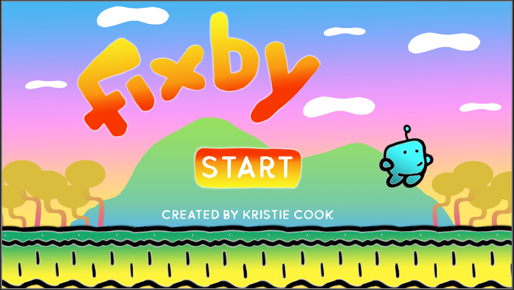

humanhybrids blog
Blog 9: Fixby and other ramblings
I have only made a handful of games before this class and only one using Unity. Most of my games were targeted toward art dialogue and social justices. Making games for entertainment was new for me and the games I made for this class helped me appreciate the mechanics and the content creation of games.
When making Fixby, I had to learn a lot of mechanics and code that I have never used before. Most people in my class had spent their last game project making a single leveled game but I spent the time learning how to make an addictive, never-ending, side-scroller. For Fixby, I had to learn how to make characters die and reappear, how to grab items, how to lose items, how to create cutscenes, how to create multiple levels, how to make characters flash a different color when they are hit, how to make a shooting mechanic, and on and on. I definitely wanted to make this game alone because I wanted to make sure every aspect of the game was original and finished on time since this is my final. I made the music using a keyboard and a moog board. All the art is original as well as the level design. Seeing my peers games let me feel like we are all on the same level of novice game making. All of us worked hard and are just doing it.
This class didn’t teach me much about making the mechanics of videogames, just the theory of having mechanics in games. It seemed to focus on video game theory and history. Level design and code is an afterthought that I had to learn on my own. This class overall was interesting and okay. I came out of it having learned a thing or two about videogames that I otherwise wouldn’t have.